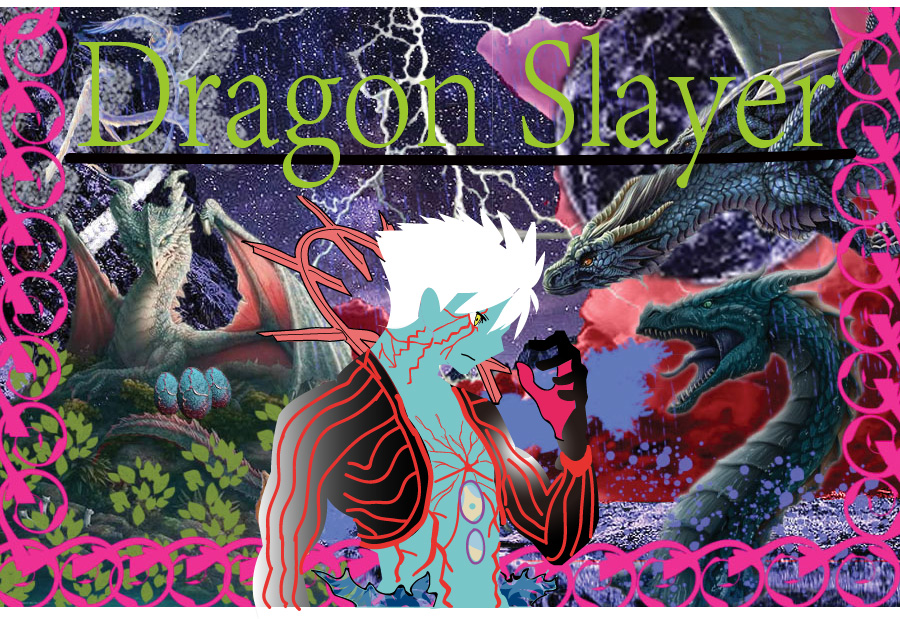

For vector graph, I use my raster grash as a background. Then I decided to add a person in the center of the image. Using the pen tool to draw to the person in the center, also adding some typeface.